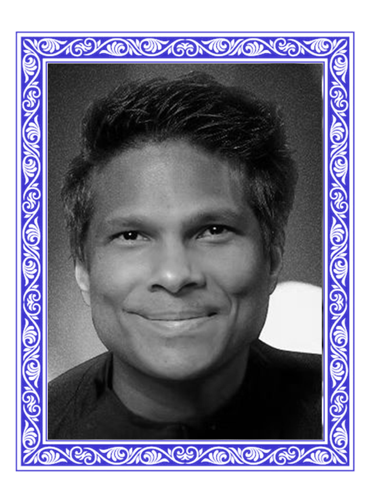
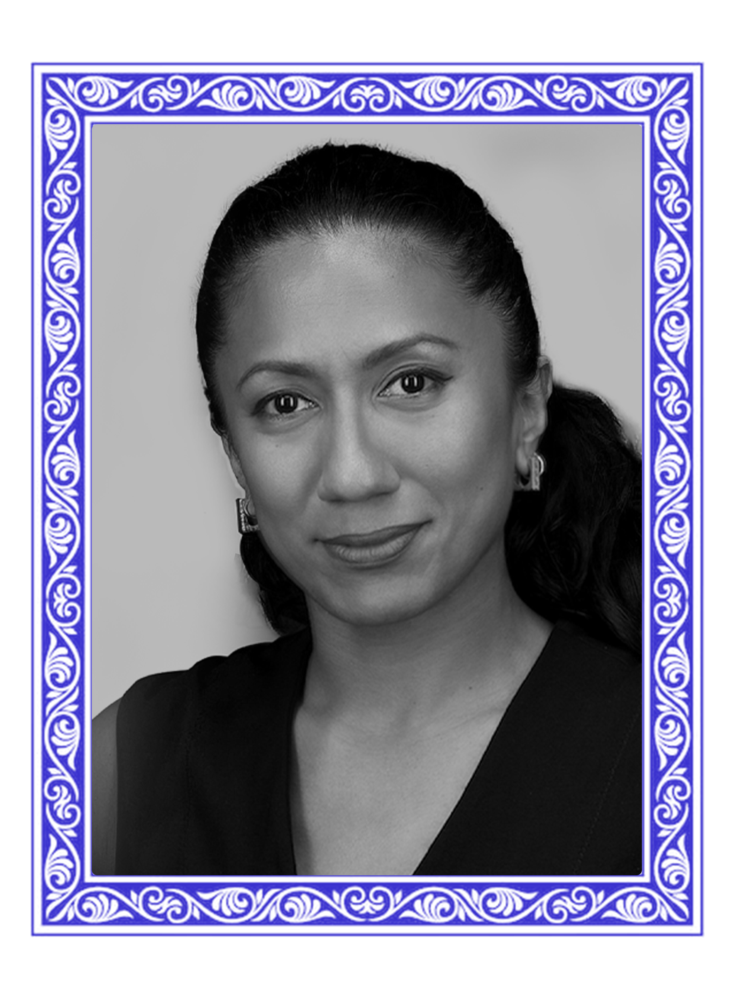

Conscience IQ Theory (CIT) was developed in response to a widespread need across our social, political, corporate, religious, and technological systems: the ability to distinguish between consciousness and conscience, and to measure and nurture the ethical dimension of human and machine behavior.
While consciousness involves perception, awareness, and responsiveness, conscience governs ethical intent why individuals and systems choose compassion over control, justice over convenience, and integrity over performance. Without a clear conscience framework, even the most intelligent systems can become ethically disoriented.
Press
Featured coverage and partnerships from ShelterZoom and Conscience IQ.
Press Release
Partnerships that protect
MIAMI, FL / ACCESS Newswire / June 4, 2026 / ShelterZoom, the cybersecurity innovator and multi-category creator in digital content ownership, document tokenization, healthcare EHR downtime resilience and trusted AI solutions, today said it has partnered with two global distributors and a partner. ShelterZoom has struck strategic deals with SB C&S, a Softbank Group company, The Kenton Group Ltd., a telecommunications equipment supplier, and Conscience IQ, a neurological-based stress assessment AI solution provider.
CIT introduces a scalable model for evaluating the ethical awareness and responsibility within any system be it individual, institutional, or algorithmic. It offers structured methods to assess fairness sensitivity, ethical reasoning, and alignment with human dignity and collective good. These tools are already being used to improve leadership culture, civic policy, and ethical governance and now hold increasing relevance in the age of artificial intelligence ethics.
This notion of conscience as sensitive, formable, and essential to ethical discernment has shaped Western thought for centuries. Conscience IQ builds on this tradition, translating it into contemporary language and applying it within modern psychology, neuroscience, and systems design.
Guiding intelligence toward the future we choose.
ANCIENT ROOTS
The concept of conscience itself has ancient roots. Its seminal articulation appears in early New Testament literature, where the Greek word syneidesis was used to describe the inner ethical witness. This notion of conscience as sensitive, formable, and essential to ethical discernment has shaped Western thought for centuries. Conscience IQ builds on this tradition, translating it into contemporary language and applying it within modern psychology, neuroscience, and systems design.
ETHICAL INTELLIGENCE
As emerging technologies like AI and autonomous systems begin to influence more of our decisions, the need to develop ethically aligned intelligence becomes urgent. It is no longer enough to ask whether machines can work. We must ask whether they can discern. Whether they can be calibrated to serve justice, protect human values, and reflect the duties we might call sacred.
A SHARED STANDARD
Conscience IQ Theory provides the architecture for this inquiry. It invites not only those working in AI ethics, but also leaders in governance, education, spirituality, and social reform to embrace a shared standard for ethical intelligence one that transcends function and points us toward what is humane, sustainable, and true.
TRANSFORM YOUR LIFE BY STRENGTHENING CONSCIENCE, MIND, & SPIRITUALITY.
Conscience IQ is not just a tool for understanding intelligence it is a compass for ensuring it serves the future we hope to build.
CIQ for Challenge-Skill Balance
In 2025, U.S. burnout hit a record 66%, linked to heart disease, elevated cortisol, brain impacts, and costing $4k-$21k per employee (about $300B nationally). Teams engineered for flow clear goals, rapid feedback, challenge-skill balance, autonomy show major gains.
The Conscience IQ plugin gauges challenge-skill fit and cognitive load via psychometrics and consented biometrics to produce a flow-readiness score, recommend next steps, and flag overload or underuse grounded in Job Characteristics Theory and the expertise reversal effect.
Collaborating with Experts Committed to Impact
We seek out and collaborate with respected professionals across disciplines to ensure that the development of Conscience IQ Theory is informed by deep expertise, forward-thinking perspectives, and a strong ethical foundation.
KIRBY DE LANEROLLE
Neurotheology and Positive Psychology
Kirby is the co-founder of the Wow Life Global Movement and Ministry, alongside his wife Fiona. His experience spans beyond his current role in ministry, encompassing the private, public, intergovernmental and civil society spheres. Appointed as both advisor & private secretary, he has worked for numerous Government Ministers in Sri Lanka, including at the Ministry of Social Services, Ministry of Special Projects & Ministry of Fisheries. He was responsible for envisioning and establishing the partnership between the Ministry of Social Services and the United Nations Volunteers, paving the way for Sri Lanka's first National Volunteering secretariat, to which he was appointed as Working Director in 2013. His work in the public sector in the area of development has also seen the collaboration with other UN entities, including the project director of the FAO. Inculcating a dedication towards social & youth empowerment on the island, Kirby conceptualized the Warehouse Project with his wife Fiona back in 2010, with it quickly gaining international recognition at the time, as a catalyst for positive social change and poverty alleviation. The use of creative arts and culture in the project traces its roots to his work in the fashion and design industry during his youth. His focus on the promotion and protection of human rights also extends under the banner of Wow Life ministries and the Apostolic Diocese Of Ceylon where interreligious dialogue, minority rights and peace-building through reconciliation, has been a focal foundation of the church's work. Kirby continues to advocate that the theme of reconciliation be seen in its wholistic form, drawing from a larger body of work, including science and psychology, with emphasis on reconciliation as healing, at the spiritual, anatomical, and social levels. In 2015, he was appointed as the Chief Overseer and Bishop of the Apostolic Diocese of Ceylon by the Indian National Apostolic Diocese (INAD). In 2016 Kirby was appointed under the directive of the then Sri Lankan Prime Minister, to be the National Coordinator for the free and independent churches of Sri Lanka. This gives him advocacy for the minority rights of the Christian community in Sri Lanka. The Wow Life Global Movement that he currently heads has representation in over 7 countries, with that number growing each year. Kirby holds a Doctorate of Divinity (DD Hon.) and bachelor's from the INA Theological Open University, India and is currently reading for his M.Sc. in Psychology & Neuroscience at King's College, UK.

FIONA DE LANEROLLE
Theology, Law & Human Development
Fiona's track record with social empowerment extends in terms of her roles as Board Member of the Apostolic Diocese of Ceylon (ADC) and as co-founder of WOWLife Church. Both entities are active nationally and abroad, in inculcating intra and interreligious dialogue toward peacebuilding and reconciliation. Within the spheres of business and creative direction, Fiona has operated for over a decade, both within the apparel industry and in digital design solutions, including setting up training facility means for students in design. She is fully certified by the Flow Research Institute as a High Flow Coach. Fiona remains an active advocate of sports as a vehicle of empowerment and bridge-building, and has personally participated in numerous Iron Man 70.3 triathlons across the world.
Fiona received her LLB (Hons) from Buckingham University in the UK and holds a Master's in Theology from the Fuller Seminary in the US.
Co-founding the Warehouse Project back in 2010 alongside her husband Bishop Kirby de Lanerolle, Fiona initially conceptualized the project as a community development initiative designed to enrich, better and sustain the lives of the community living in proximity to the initial locality of the project. Since then, she's worked with an ever-growing team, both local and global, to replicate and facilitate projects around Sri Lanka that fosters human development and economic enablement.

DR. LA SHAWNA CLARK
Physical Medicine and Rehabilitation
Dr. La Shawna Clark Williams, MD is a health care provider primarily located in Panorama City, CA. She graduated from medical school in 2011 and has 14 years of experience. Her specialties include Physical Medicine & Rehabilitation. She accepts AltaMed Senior BuenaCare (PACE), Anthem Blue Cross, and BLUE CROSS of CALIFORNIA, and other major insurance plans. Dr. La Shawna Clark Williams has 8 areas of expertise, including Chronic Pain, EMG/Nerve Conduction Studies, and Injury.
J. NATASHA GOONERATNE
Specialist & Researcher Public International Law
Specialist in International Law, Human Rights, Reconciliation and Diplomacy. Lecturer & Consultant on Public International Law. Specialised in UN Systems & Mechanisms, high level government, embassies, bilateral/ multilateral agency stakeholder management. Researcher & fixer for international media outlets including New York Times, Swedish Public Media (SVT), the Transnational and Finnish Broadcasting Company (YLE). Convener of Perspective South, a platform for public accessibility to geopolitics, International law, and human rights. Natasha is a Dual Masters holder, with a Masters in International Law and Human Rights from the UN University for Peace in Costa Rica and a Masters in Political Science with a Major in Global Politics from Ateneo de Manila University, Philippines.
DR. LIHINI GUNAWARDANA
General Adult Psychiatrist specialised in Addiction Psychiatry
Lihini qualified as a medical doctor and went on to specialise in Psychiatry. She is a qualified General Adult Psychiatrist with a specialisation in Addiction Psychiatry. She is the national Associate Medical Director for a UK based charity that offers clinical & psychosocial interventions for substance misuse through 45 centres based all over England. Lihini is passionate about improving access to mental healthcare, especially for women. She holds a postgraduate qualification in Medical Education and has recently completed a Masters in Medical Leadership. Her interests outside medicine are quilting and growing flowers, both of which she advocates to improve mental well-being.
A. JAYAWARDENA
Family and Trauma counsellor, Researcher - psychopathology
Experts in rehabilitation, international law, and psychiatry collaboratively enhance our multidisciplinary, conscience-driven mission.
THE NEUROSCIENCE OF WELL- BEING
↗
Insights from Leading Research on Conscience, Neurochemistry, and Mental Health
Miller and Cohen
(2001) state
A strong conscience enhances well-being by promoting nervous system control. The prefrontal cortex regulates decisionmaking, impulse control, and ethical reasoning.
Volkow et al.
(2017)
Neurochemical balance regulates well-being, motivation, and resilience. Dopamine and serotonin enhance pleasure, goal persistence, and nervous system optimization and healing.
Peterson and Seligman
(2004)
Positive psychology links conscience to virtues like fairness, justice, and integrity, essential for well-being, optimal functioning, and strong character development.
Csikszentmihalyi
(1990)
Challenge skill balance fosters flow, enhancing engagement and performance. Flow occurs when challenges match skills, creating deep involvement and intrinsic motivation.
Seeley et al.
(2007)
The salience network assesses VUCA, prioritizing stimuli, managing risks, and maintaining homeostasis for adaptive, relevant behavioral responses and safety.
Crum et al.
(2011)
Perceived threats trigger physiological responses. Stress influences fat storage, and mindset affects metabolism, as shown in Crum et al.'s milkshake experiment.
 (1).png)
.jpeg)
.png)
.png)
.png)
.png)